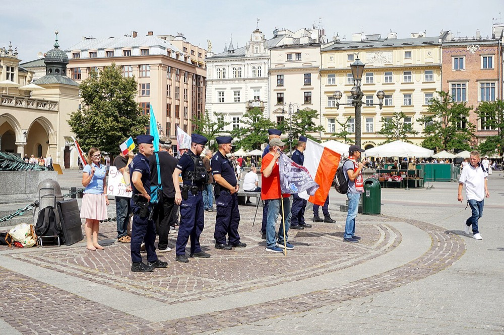

Польша

Краков — учебник по истории, который читается легко. Рыночная площадь — крупнейшая в средневековой Европе: суконные ряды посередине, голуби, трубач с башни, который обрывает мелодию на непонятной ноте — так звучит легенда про стрелу в горло. Вавель с драконом внизу, Казимеж — еврейский квартал с пекарнями, где заблудиться приятнее, чем в музее. Соляная шахта Величка — отдельная страна: три километра вниз, часовня, вырезанная из соли, с люстрами из соли, и соль в воздухе, от которой перехватывает дыхание. Дальше — Освенцим — рядом, и это не для соцсетей: час тишины, который ценнее любого музея. Кухня: pączki с розовым вареньем, бигос и żurek в хлебной буханке. Цены дружелюбные, поезда чистые, а суббота заканчивается не позднее вечера — чешётся план на весну: Гданьск с янтарём, Вроцлав с гномами на углах. Краков за выходные покажет вам Польшу целиком — а Польша того стоит.
Что знать перед поездкой
- Величка — бронируйте спуск утром
- Пончики с розой — в четверг, как местные
- Освенцим — закладывайте полдня и тишину